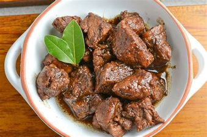

Adobo
Adobo is a traditional Filipino stew made with meat, typically chicken or
pork, that is marinated in vinegar, soy sauce, garlic, and other spices.
It is a savory and tangy dish with a unique flavor that is loved by many.
Adobo can be served as a main dish or as a side dish and is a versatile
dish that can be cooked in different ways. Its delicious taste and aroma
make it a favorite among Filipinos and food enthusiasts worldwide.
Ingredients
list of ingredients typically used in making adobo:
- Chicken or pork (or both)
- Vinegar
- Soy sauce
- Garlic
- Bay leaves
- Whole black peppercorns
- Water
- Oil
Optional ingredients that can be added to give the dish more depth and
flavor include:
- Onions
- Potato
- Brown sugar
- Coconut milk
- Red chili peppers
The exact proportions and combination of ingredients can vary depending on
personal preference and regional differences.